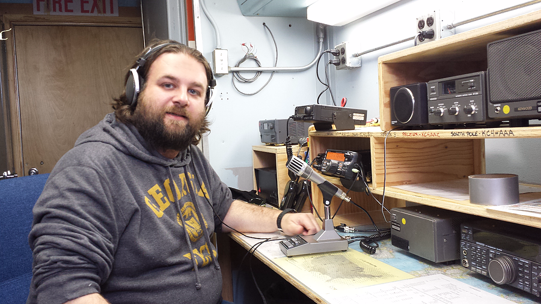

Amateur Radio

I have been a licenced extra class amateur radio operator since 2005. My
call sign is AI4LX. I am also a VE through the ARRL. As a graduate
student at Georgia Tech I held officer positions in the Georgia Tech
Amateur Radio Club (GTARC) including President, Secretary, and Tresurer.
I also was able to make a contact with the GTARC from the South Pole in
January 2015 (Audio clip and some pictures below).